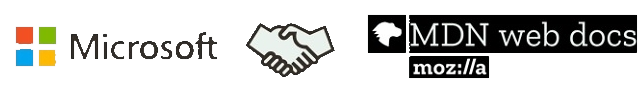

Mozilla, Microsoft, Google, Samsung и W3C создали единый
портал документации для веб-разработчиков

Сегодня, 18 октября, Mozilla объявила о сотруд
ничестве с компаниями Microsoft, Google, W3C и Samsung
в создании
портала документации MDN Web Docs.
Чтобы поддержать это сотрудничество, Mozilla
cформировала Консультативный совет
Product Advisory Board.
Цель всего этого проста — сделать
веб-разработку немного легче.
Работа сообщества лежит в основе
успеха MDN. Тысячи добровольцев помогли
построить и усовершенствовать MDN
за последние 12 лет. Свой вклад в развитие кроссбраузерной
документации сделали и авторы из
Google и Microsoft. В 2017 году технические авторы
Microsoft сделали более 5000 изменений.
В дальнейшем они
сосредоточат свои усилия
по документированию Web API на MDN. Кроме того,
7700 страниц документации из портала
Microsoft Developer Network уже перенаправляют на
соответствующие разделы MDN.
Новый график зависимостей дает представление
о проектах, от которых зависит ваш код,
и о проектах,
зависящих от вашего кода.
Теперь пользователи могут увидеть все пакеты и
приложения, к которым они
подключены,
не выходя из своего репозитория.
В настоящее время функция поддерживает
языки Ruby
и JavaScript, а вскоре будет
реализована и поддержка Python.
По некоторым оценкам, за неполный 2017 год ущерб от всех
проведённых веб-атак,
шифрующих все важные
данные и вымогающих за их разблокировку
деньги, составил порядка $1 миллиарда.
Такой информацией в своём отчёте
поделились сотрудники отдела
анализа угроз (Threat Analysis Unit, TAU) компании Carbon Black.
Их исследование имеет неутешительные
результаты — за период с 2016 по 2017 годы размер
рынка вымогателей увеличился сразу на 2502%.